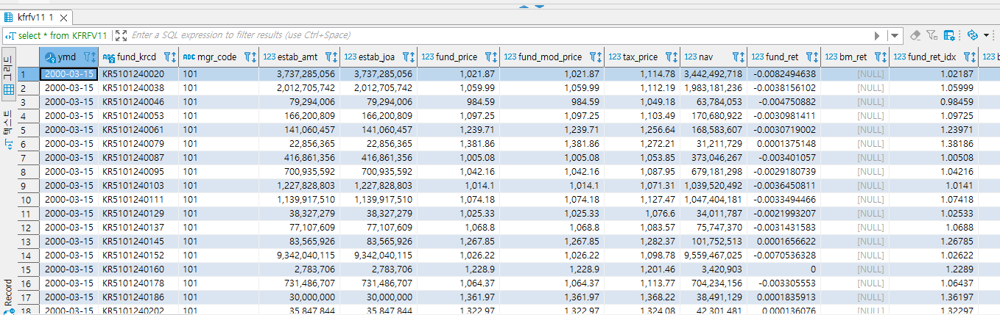
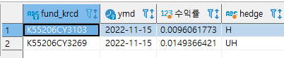
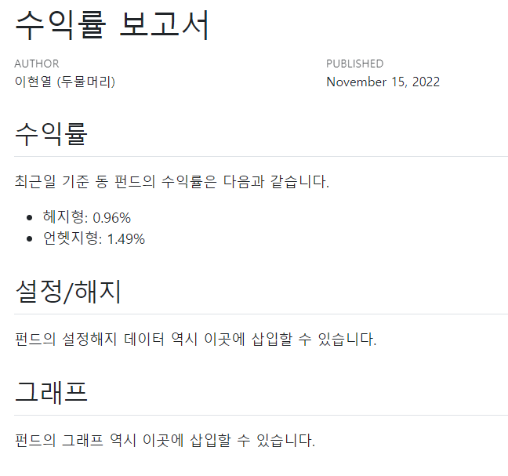
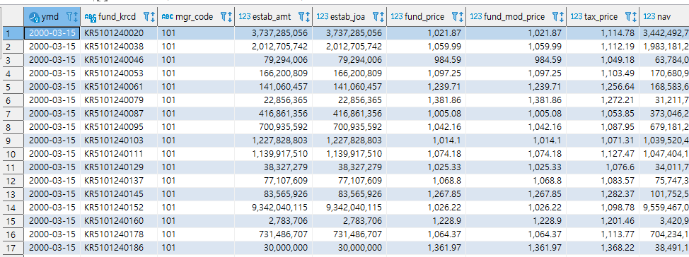
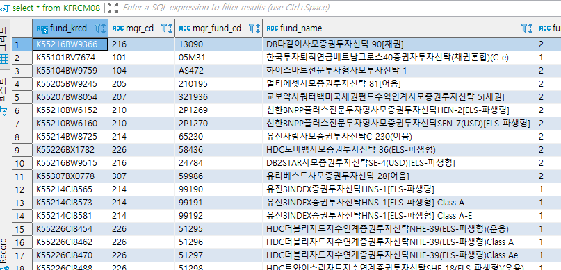
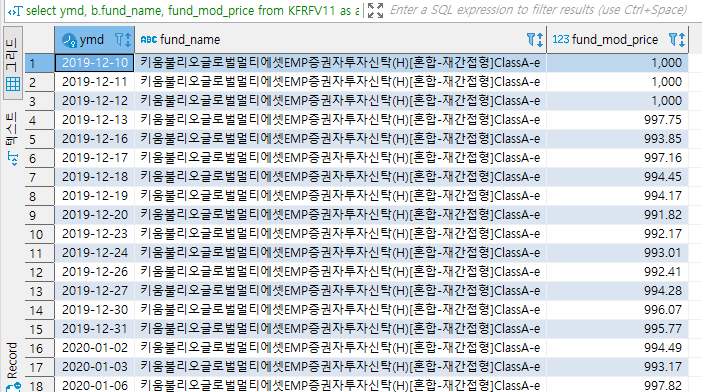
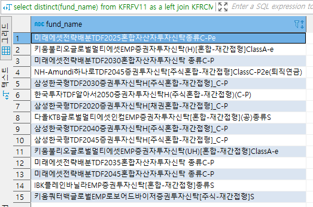
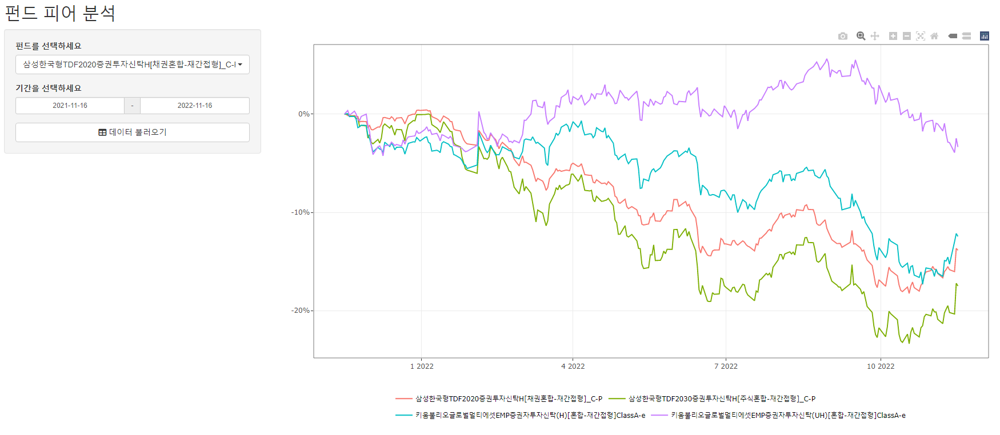

select * from (
select fund_krcd, ymd, fund_mod_price /lag(fund_mod_price, 1) over (partition by fund_krcd order by ymd) - 1 as 수익률,
case when fund_krcd = 'K55206CY3103' then 'H'
when fund_krcd = 'K55206CY3269' then 'UH' end hedge
from KFRFV11
where fund_krcd in ('K55206CY3103', 'K55206CY3269')
order by fund_krcd, ymd
) as b
where ymd in (select max(ymd) from KFRFV11);SQL과 R(rmd,shiny)를 이용한 문서자동화
Quarto(Rmd)를 이용한 문서 자동화
먼저 SQL서버에서 각종 펀드 데이터를 확인해보자.

이 중 본인이 운용하는 펀드의 어제자 수익률 및 기타 정보를 토대로 매일 보고서를 만들어야 하는 경우가 대다수다. 먼저 최근일자 수익률을 계산하는 쿼리를 작성해보자

R에서 SQL을 연결하면 해당 데이터를 받아올 수 있다. 만일 바로 서버에 접속할 수 있다면 dbConnect() 함수를 사용해 손쉽게 연결할 수 있다. 반면 데이터가 AWS와 같은 클라우드에 있어 ssh 연결이 필요할 경우 다음과 같은 작업을 해주면 된다.
library(RPostgreSQL)
library(ssh)
cmd <- 'ssh::ssh_tunnel(ssh::ssh_connect(host = "AWS 호스트주소:22",
keyfile = "pem key 주소",
verbose = 4), port = 5555, target = "DB주소:5432")'
pid <- sys::r_background(
std_out = FALSE,
std_err = FALSE,
args = c("-e", cmd)
)
con <- DBI::dbConnect(
drv = dbDriver('PostgreSQL'),
host = "127.0.0.1",
port = 5555,
user = "이름",
password = "비밀번호",
dbname = "스키마"
)실제 DB에 접속 후 해당 데이터를 받아보자.
library(RPostgreSQL)
library(ssh)
cmd <- 'ssh::ssh_tunnel(ssh::ssh_connect(host = "AWS 호스트주소:22",
keyfile = "pem key 주소",
verbose = 4), port = 5555, target = "DB주소:5432")'
pid <- sys::r_background(
std_out = FALSE,
std_err = FALSE,
args = c("-e", cmd)
)
con <- DBI::dbConnect(
drv = dbDriver('PostgreSQL'),
host = "127.0.0.1",
port = 5555,
user = "이름",
password = "비밀번호",
dbname = "스키마"
)
data = dbGetQuery(con, "select * from (
select fund_krcd, ymd, fund_mod_price /lag(fund_mod_price, 1) over (partition by fund_krcd order by ymd) - 1 as 수익률,
case when fund_krcd = 'K55206CY3103' then 'H'
when fund_krcd = 'K55206CY3269' then 'UH' end hedge
from KFRFV11
where fund_krcd in ('K55206CY3103', 'K55206CY3269')
order by fund_krcd, ymd
) as b
where ymd in (select max(ymd) from KFRFV11);
")
dbDisconnect(con)
print(data)[1] TRUE fund_krcd ymd 수익률 hedge
1 K55206CY3103 2022-11-16 -0.003390207 H
2 K55206CY3269 2022-11-16 -0.008953779 UH이제 Rmarkdown 혹은 Quarto에서 쿼리를 이용해 해당 데이터를 받은 후, 문서로 작성하는 방법은 다음과 같다.
---
title: "수익률 보고서"
date: "`r Sys.Date()`"
author: "이현열 (두물머리)"
format: html
editor: visual
---
```{r setup, include=FALSE}
knitr::opts_chunk$set(echo = TRUE,
warning = FALSE,
message = FALSE,
include = FALSE,
out.width = "50%")
```
```{r echo = FALSE}
library(RPostgreSQL)
library(ssh)
library(dplyr)
library(magrittr)
cmd <- 'ssh::ssh_tunnel(ssh::ssh_connect(host = "AWS 호스트주소:22",
keyfile = "pem key 주소",
verbose = 4), port = 5555, target = "DB주소:5432")'
pid <- sys::r_background(
std_out = FALSE,
std_err = FALSE,
args = c("-e", cmd)
)
con <- DBI::dbConnect(
drv = dbDriver('PostgreSQL'),
host = "127.0.0.1",
port = 5555,
user = "이름",
password = "비밀번호",
dbname = "스키마"
)
data = dbGetQuery(con, "select * from (
select fund_krcd, ymd, fund_mod_price /lag(fund_mod_price, 1) over (partition by fund_krcd order by ymd) - 1 as 수익률,
case when fund_krcd = 'K55206CY3103' then 'H'
when fund_krcd = 'K55206CY3269' then 'UH' end hedge
from KFRFV11
where fund_krcd in ('K55206CY3103', 'K55206CY3269')
order by fund_krcd, ymd
) as b
where ymd in (select max(ymd) from KFRFV11);
")
dbDisconnect(con)
data = data %>%
mutate(ret = multiply_by(수익률, 100) %>% round(., 2) %>% paste0(., '%'))
```
## 수익률
최근일 기준 동 펀드의 수익률은 다음과 같습니다.
- 헤지형: `r data %>% filter(hedge == 'H') %>% select(ret) %>% pull`
- 언헷지형: `r data %>% filter(hedge == 'UH') %>% select(ret) %>% pull`
## 설정/해지
펀드의 설정해지 데이터 역시 이곳에 삽입할 수 있습니다.
## 그래프
펀드의 그래프 역시 이곳에 삽입할 수 있습니다.결과물은 다음과 같다.

매일 데이터베이스가 업데이트 되므로, 해당 qmd 파일을 렌더링 할 때마다 최근 데이터가 업데이트 된다. 따라서, 매일 오전 특정 시간에 자동으로 렌더링 하는 스케줄러를 만들어주면, 매일 보고서가 자동으로 만들어진다.
quarto::quarto_render('report.qmd', output_file = paste0(stringr::str_remove_all(Sys.Date(), '-'), '.html'))report.qmd는 앞에서 만든 qmd 파일이며, output_file 인자를 통해 최신일.html 파일이 생성된다. 추가적으로 다음과 같은 작업을 함께 스케줄러에 넣는 것을 추천한다.
- 생성 여부 slack으로 전송하기
- HTML 결과물 slack / 팀 이메일로 전송하기
이로써 매일 아침 보고서를 작성하는 번거로움도 사라지고, 쓸데없는 종이를 출력하지 않아도 되 지구환경에도 도움이 된다.
Shiny를 이용한 앱 자동화
샤이니를 이용할 경우 인터랙티브 앱을 만들 수 있어, 훨씬 다차원의 데이터분석이 가능하다. 예를 들어 일자별 데이터를 즉각적으로 바꿔가며 확인할 수 있을 뿐 아니라, 문서로 표현할 수 없는 자유로운 분석이 가능하다.
또한 앱 내에서 SQL 서버에 직접 접속하여 데이터를 받아오는 방식으로 만들경우, 원본 데이터를 로딩할 시간도 필요없으며 수 GB ~ TB를 대상으로 한 데이터분석 결과도 즉각적으로 받아볼 수 있다.
예시로써, 원하는 펀드 및 기간을 선택한 후 조회를 누르면 수익률이 나오는 앱을 만들어보도록 하자. 샤이니 앱을 만들때는 먼저 손으로 그림을 그려가며 프레임을 짠 후, 이에 맞게 위젯을 배치하거나, 결과물을 나타내는 등 하나하나씩 빌드업 해나가는 것이 훨씬 효율적이고 오류도 줄일 수 잇다.

먼저 SQL에서 원하는 펀드의 기준가 테이블을 다음과 같다.
select * from KFRFV11;
그러나 해당 테이블은 펀드코드(fund_krcd)를 기준으로 데이터가 나온다. 펀드명은 다음 테이블에서 확인할 수 있다.
select * from KFRCM08;
두 개의 테이블을 합친 후 원하는 펀드들의 성과만 나오게 하는 쿼리는 다음과 같다.
select ymd, b.fund_name, fund_mod_price
from KFRFV11 as a
left join KFRCM08 b
on a.fund_krcd = b.fund_krcd
where a.fund_krcd in ('K55234CJ0948', 'K55232CI4208', 'K55306CW0035', 'K55301BM8051',
'K55301BM7723', 'K55301BM7632', 'K55301BM7558', 'K55105BC8853', 'K55105BC8713', 'K55105BC8440',
'K55105BC7830', 'K55206CY3269', 'K55206CY3103', 'K55206BF9450', 'K55101CU1610')
order by fund_name, ymd;
이 중 원하는 펀드를 선택하게 만들기 위한 위젯이 필요하다. 위젯의 입력값에 들어가기 위한 펀드명들의 고유값은 아래와 같이 확인할 수 있다.
select distinct(fund_name)
from KFRFV11 as a
left join KFRCM08 b
on a.fund_krcd = b.fund_krcd
where a.fund_krcd in ('K55234CJ0948', 'K55232CI4208', 'K55306CW0035', 'K55301BM8051',
'K55301BM7723', 'K55301BM7632', 'K55301BM7558', 'K55105BC8853', 'K55105BC8713', 'K55105BC8440',
'K55105BC7830', 'K55206CY3269', 'K55206CY3103', 'K55206BF9450', 'K55101CU1610')
이를 R에서 불러온다.
# DB Connect --------------------------------------------------------------
library(RPostgreSQL)
library(ssh)
library(magrittr)
library(dplyr)
library(glue)
library(DT)
library(ggplot2)
library(plotly)
library(shiny)
library(shinyWidgets)
cmd <- 'ssh::ssh_tunnel(ssh::ssh_connect(host = "AWS 호스트주소:22",
keyfile = "pem key 주소",
verbose = 4), port = 5555, target = "DB주소:5432")'
pid <- sys::r_background(
std_out = FALSE,
std_err = FALSE,
args = c("-e", cmd)
)
con <- DBI::dbConnect(
drv = dbDriver('PostgreSQL'),
host = "127.0.0.1",
port = 5555,
user = "이름",
password = "비밀번호",
dbname = "스키마"
)
lst = dbGetQuery(con, "select distinct(fund_name)
from KFRFV11 as a
left join KFRCM08 b
on a.fund_krcd = b.fund_krcd
where a.fund_krcd in ('K55234CJ0948', 'K55232CI4208', 'K55306CW0035', 'K55301BM8051',
'K55301BM7723', 'K55301BM7632', 'K55301BM7558', 'K55105BC8853', 'K55105BC8713', 'K55105BC8440',
'K55105BC7830', 'K55206CY3269', 'K55206CY3103', 'K55206BF9450', 'K55101CU1610')
") %>% arrange(fund_name) %>%
pull()이제 ui 부분은 다음과 같이 작성이 가능하다
ui <- fluidPage(
titlePanel("펀드 피어 분석"),
sidebarLayout(
# Side
sidebarPanel(
width = 3,
# 펀드 리스트
pickerInput(
inputId = "f_lst",
label = "펀드를 선택하세요",
choices = lst,
selected = c('키움불리오글로벌멀티에셋EMP증권자투자신탁(H)[혼합-재간접형]ClassA-e',
'키움불리오글로벌멀티에셋EMP증권자투자신탁(UH)[혼합-재간접형]ClassA-e'),
options = list(
`actions-box` = TRUE),
multiple = TRUE
),
# 기간
dateRangeInput(
inputId = 'date',
label = '기간을 선택하세요',
start = Sys.Date() - lubridate::years(1),
end = Sys.Date(),
max = Sys.Date(),
format = "yyyy-mm-dd",
separator = "-"),
# 데이터 불러오기
actionButton('go', '데이터 불러오기',
icon = icon("table"), width = '100%')
),
# Main Panel
mainPanel(
plotlyOutput('graph', height = "700px") %>% shinycssloaders::withSpinner()
)
)
)먼저 사이드바에는 3개의 위젯이 들어간다.
- pickerInput: 원하는 펀드 리스트이며, 앞서 받아온 결과를 choices 인자에 넣는다. 또한 디폴트 값으로 본인이 운용하는 펀드를 선택한다.
- dateRangeInput: 기간을 입력하며 시작일은 1년전, 종료일은 오늘을 선택한다.
- actionButton: 위의 위젯에서 입력값을 변경할 때마다 데이터를 호출할 경우 서버에 엄청난 부담이 간다. 따라서 지연받응 설정을 위한 버튼을 배치한다.
또한 메인패널에는 수익률 그래프를 그린다. 이 외에도 불러온 데이터를 기반으로 각종 결과값을 넣을 수도 있다.
다음으로 server의 코드는 다음과 같다.
server <- function(input, output) {
db = eventReactive(input$go, {
fund = paste(input$f_lst, collapse = "','")
fund_c = paste0("'", fund, "'")
query = glue("
select ymd, b.fund_name, fund_mod_price
from KFRFV11 as a
left join KFRCM08 b
on a.fund_krcd = b.fund_krcd
where b.fund_name in ({fund_c})
and (ymd between '{input$date[1]}' and '{input$date[2]}')
order by fund_name, ymd;
")
tbl = dbGetQuery(con, query)
return(tbl)
})
output$graph = renderPlotly({
(
db() %>%
group_by(fund_name) %>%
mutate(ret = fund_mod_price / first(fund_mod_price) - 1) %>%
ggplot(aes(x = ymd, y = ret, color = fund_name)) +
geom_line() +
theme_bw() +
xlab('') + ylab('') +
scale_y_continuous(labels = scales::percent)
) %>% ggplotly() %>%
layout(legend = list(
title = list(text = ''),
orientation = "h",
xanchor = "center",
x = 0.5))
})
}먼저 eventReactive() 함수를 통해 위에서 버튼을 누를 경우 데이터를 다운로드 받는다. 원하는 펀드, 원하는 일자를 기준으로 데이터를 조회하는 쿼리는 다음과 같다.
select ymd, b.fund_name, fund_mod_price
from KFRFV11 as a
left join KFRCM08 b on a.fund_krcd = b.fund_krcd
where b.fund_name in ('키움불리오글로벌멀티에셋EMP증권자투자신탁(H)[혼합-재간접형]ClassA-e','키움불리오글로벌멀티에셋EMP증권자투자신탁(UH)[혼합-재간접형]ClassA-e')
and (ymd between '2021-11-15' and '2022-11-15')
order by fund_name, ymd;이 중 fund_name에 해당하는 펀드명은 pickerInput의 결과물을, ymd에 해당하는 일자는 dateRangeInput의 결과물을 넣어주면 된다.
단, pickerInput의 결과물은 문자열 벡터로 입력되어 A B 형태로 저장된다. 반면 쿼리에는 해당 값을 ('A', 'B') 형태로 바꿔줘야 한다. 이를 위한 코드가 다음과 같다.
fund = paste(input$f_lst, collapse = "','")
fund_c = paste0("'", fund, "'")- 먼저 문자열 백터를
paste()함수를 통해 하나의 문자로 합치며, collapse는 중간에 들어갈 문자를 뜻한다. 즉A, B형태로 문자가 완성된다. - 다시 한번 paste0() 함수를 통해 앞뒤로
'를 붙여준다. 즉'A', 'B'형태로 만든다.
위에서 받아온 데이터를 가공한 후 renderPlotly() 내에서 plotly 형태로 렌더링 해준다.
마지막으로 다음의 코드를 추가한다.
shinyApp(ui = ui, server = server)앱을 구동한 결과는 다음과 같다.

위젯에서 원하는 항목을 선택한 후 [데이터 불러오기] 버튼을 클릭하면, 해당 입력값들을 기준으로 쿼리가 작성된 후 이를 SQL 서버로 전송한다. 그 후 결과값을 다시 R로 불러와 샤이니 앱에 출력한다. 이처럼 위젯을 통해 자유자재로 SQL 쿼리를 작성한 후 원하는 데이터를 받아올 수 있다.